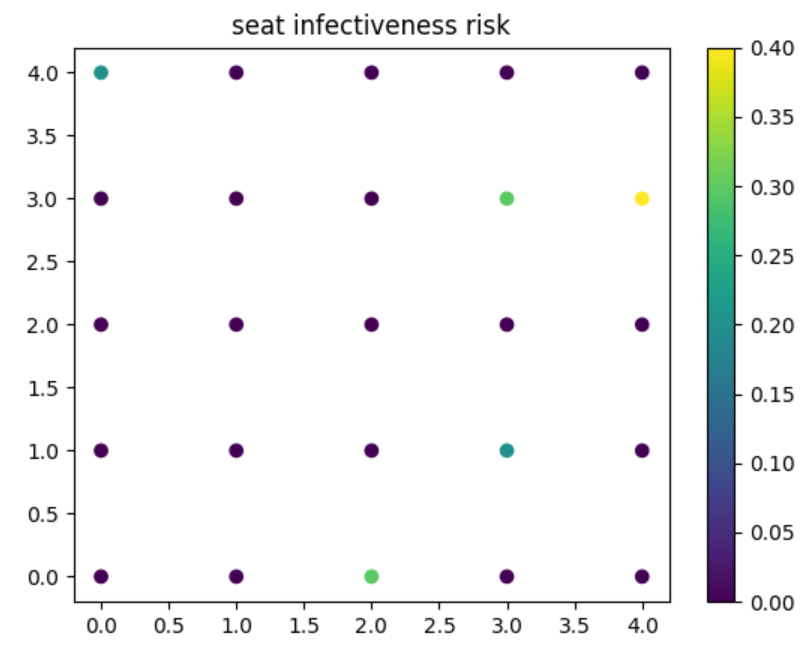
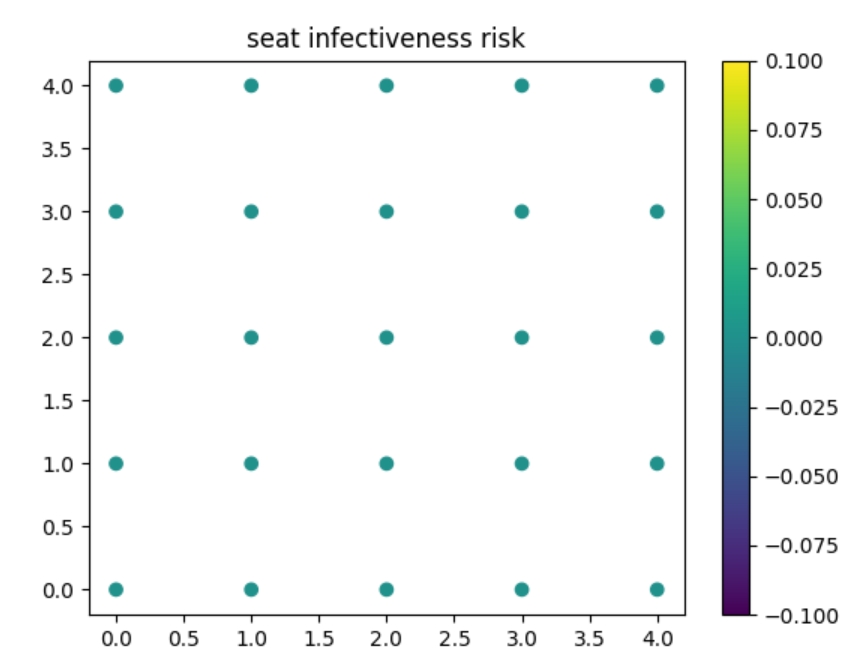
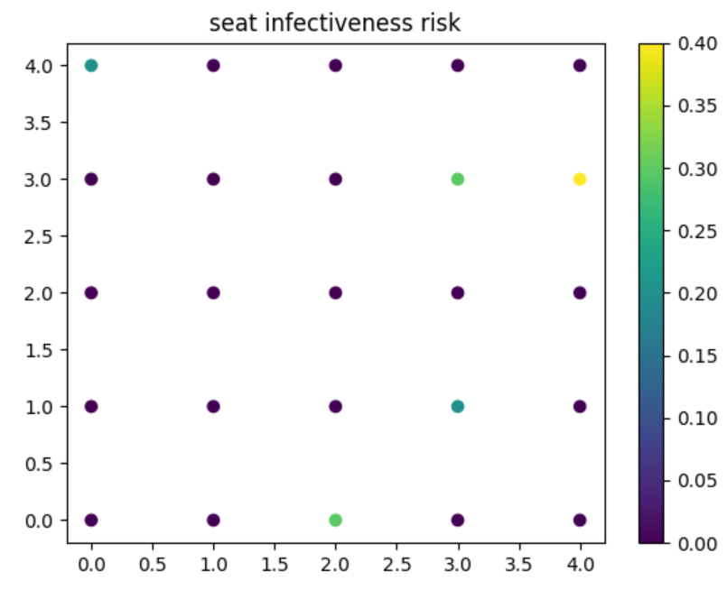
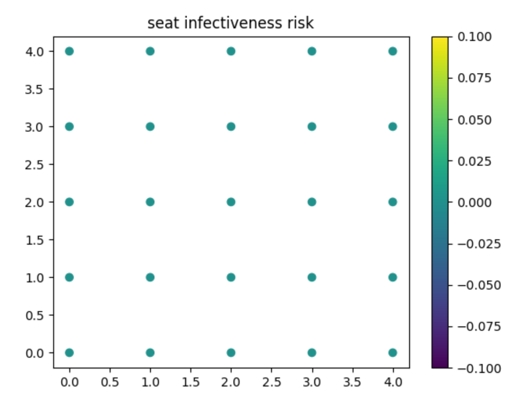

Introduction
Several models exist for the transmission of SARS-CoV-2 (severe acute respiratory syndrome coronavirus 2) based on varying assumptions and parameters. The Chu and Chen models investigate coronavirus transmission and infection as functions of nonpharmaceutical interventions (physical distances, masks) and respiratory droplets, respectively. The results of the Chu model suggest guidelines for social distancing (1 meter or more) between individuals and public usage of facial and eye protection, while the Chen model shows the relationship between droplet size and transmission range. The two models both attempt to examine coronavirus transmission, but they report results that are not necessarily conflicting, but rather, incomplete on their own. The significance of this problem is that because models vary depending on the parameters and underlying assumptions, there is uncertainty on how to filter out the valid and optimal inputs. In this replication study, we develop a simple infection rate model based on the results and parameters reported by the Chu and Chen models, the MIT COVID-19 Indoor Safety Tool, and the airborne.cam tool by Cambridge. The output of this experiment will be primarily a simulation where a user will be able to set parameters to see the resulting risks and infections caused by in person instructions. This report will be a secondary output along with the website and visual presentation and will be used as a guide to explain methods as well as theory behind the work.
Our Research
Our model is scaled-down to represent a single room for simplicity. The assumptions and calculations made are based on findings from the MIT Indoor Safety Guidelines and Cambridge models. We implemented the parameters given by the MIT model, specfically physical room dimensions and physiological factors (human and virus). We validated our calculations with the plots provided by the airborne.cam tool.
Assumptions
- Agents remain in place for all model runs
- In an actual school setting, agents (humans) are more likely to be spaced apart (seating charts) during class than walking around (providing variable distances)
- Mask wearing reduces risk of infection by 50%
- A student becoming symptomatic will be removed from the environment as soon as they are detected
- We are assuming that without a source of ventilation or filtration, a room will be considered to be well mixed.
Constraints
- Infectiousness of viral particles is an ongoing field of study. The thorough methodology of the ‘Chen’ study, providing model parameters such as ‘Inhalation fraction’ (used for mask usage), ‘Thermal conductivity of air [Watts * meter^-1 * Kelvin^-1]’, and ‘[exhaled] air jet initial momentum [meters^4 * seconds^-2]
- As viral load deposition at a distance is not the primary function of this model (and as our model has to be run in time steps), the computation necessary for adding the first model’s parameters to ours is prohibitive, leading us to use their conclusions and cite their workings as a source instead.
Well-mixed Room
The definition of a room that is well mixed is that the pathogen is distributed uniformly throughout the room (Bazant)[3]. Furthermore according to Bazant, one is no safer from airborne pathogens at 60 feet than 6 feet. This renders the Six-Foot Rule somewhat ineffective to reduce the spread of the Covid-19 Viruses. Bazant’s theory can be further supported with data presented in Sture Holmberg and Qingyan Chen’s simulations of different ventilation systems in the classroom.[6] In the result of their simulation, a classroom with mix ventilation system implemented will have a roughly uniform distribution of aerosol particles across the room. Since most mechanical ventilation systems in real life like air conditioners are designed to realize mix ventilation, it is reasonable to assume that school classrooms will be under such mix ventilation conditions. Therefore, the well-mixed room theory is well supported and it is safe to implement the MIT model in our one room modeling. Within our model, we are assuming that all rooms are initially well mixed given no ventilation or air filtration. This is because we want to make sure that our simulation gives the safest results. “Experts agree that good ventilation is the most effective and practical way to rid a space of contaminants.”(Bartzokas) Without ventilation any infected patient will in time be able to spread the virus all around the room due to there being no fresh intake of air nor any action to clean the air up. Many of the papers that have been referenced agree and follow this idea due to it being the most realistic idea to follow as well. The implementation of ventilation will allow us to more accurately gauge the risk of having in person instructions and measure how severe it would be as well.
Mask Wearing
Understanding the capability of the masks in this pandemic is one important thing in making epidemic prevention decisions and policies. Many health authorities suggested that masks are able to prevent sick patients from spreading the virus to others by filtering out the virus from their exhaled breath. “Results clearly indicate that wearing surgical masks or unvented KN95 respirators reduce the outward particle emission rates by 90% and 74% on average during speaking and coughing, respectively, compared to wearing no mask.” These results further highlight the importance and significance of mask wearing and therefore we will also replicate this fact into our model.
Example Outputs
Resulting Plot
 



Mitigation Strategies
- Seating Charts for optimized distance between students
- Barriers to interrupt airflow or block launched virions
- Mask types
- Class length / School day length
- Class size
- Open vs closed windows
- Ventilation
Conclusion
The main purpose of this project is to create and verify assumptions/prior research and simulate the protocols currently used to facilitate limited in-person learning. The other purpose is to verify the implementation of existing and supplemental code in SchoolABM. For classrooms, ventilation and air exchange rate are key parameters to focus on improving to reduce COVID infections. For buses, seating plans and open windows are the primary recommended intervention methods. These recommendations come with the assumption that current mandates are being followed to a relatively high degree.
References
Physical distancing, face masks, and eye protection to prevent person-to-person transmission of SARS-CoV-2 and COVID-19: a systematic review and meta-analysis
Short-range airborne route dominates exposure of respiratory 4 infection during close contact
Beyond Six Feet: A Guideline to Limit Indoor Airborne Transmission of COVID-19
airborne.cam: a risk calculator of SARS-CoV-2 aerosol transmission under well-mixed ventilation conditions
COVID-19 Outbreak Associated with Air Conditioning in Restaurant, Guangzhou, China, 2020
Air flow and particle control with different ventilation systems in a classroom
Efficacy of masks and face coverings in controlling outward aerosol particle emission from expiratory activities